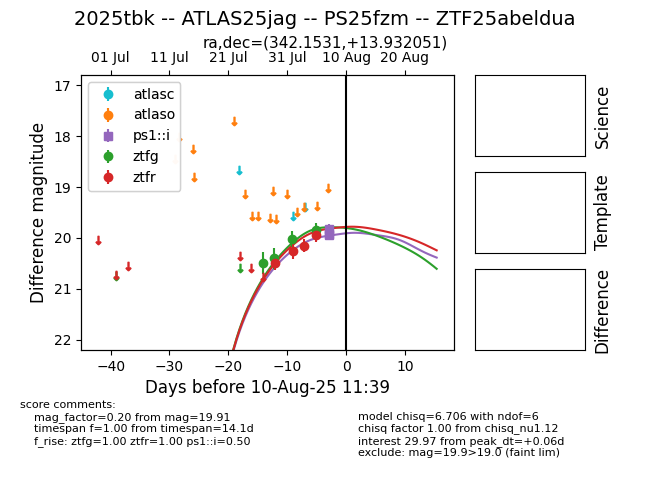

Target 2025tbk at 2025-08-08 12:50, see:
FINK: fink-portal.org/2025tbk
Lasair: lasair-ztf.lsst.ac.uk/objects/2025tbk
ALeRCE: alerce.online/object/2025tbk
TNS: wis-tns.org/object/2025tbk
YSE: ziggy.ucolick.org/yse/transient_detail/2025tbk
alt names
ZTF25abeldua (ztf,fink)
2025tbk (tns,yse)
ATLAS25jag (atlas)
PS25fzm (panstarrs)
coordinates:
equatorial (ra, dec) = (342.1531,+13.93205)
galactic (l, b) = (83.1293,-39.26505)
photometry
last ztfg=19.84, ztfr=19.94
4 ztfg, 4 ztfr detections
